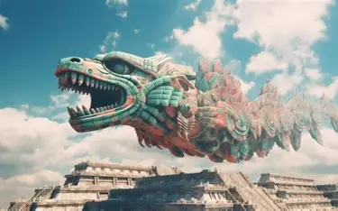
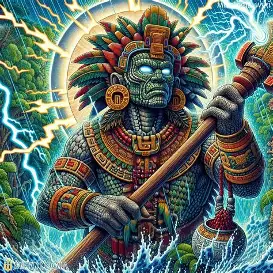
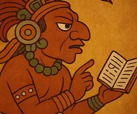
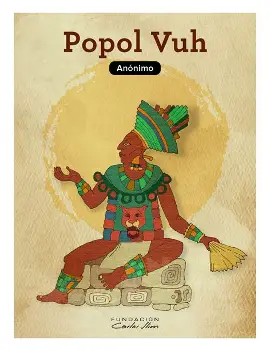

Conoce algunas de las deidades más importantes de sus creencias.
La religión maya incluía diversas deidades relacionadas con la naturaleza, el cielo, la lluvia, el maíz y otros aspectos de la vida. Sus representaciones y nombres podían variar según la época y la región.

La serpiente emplumada, una figura importante en distintas tradiciones mesoamericanas.

Deidad relacionada con la lluvia y el agua, elementos fundamentales para la agricultura.

Deidad vinculada con el conocimiento y con aspectos del orden del mundo en algunas tradiciones mayas.

El maíz tuvo una gran importancia en la vida y en los relatos de origen de distintos pueblos mayas.
El Popol Vuh es una obra fundamental de la tradición k'iche'. Contiene relatos sobre el origen del mundo, los seres humanos y las aventuras de los héroes gemelos.
